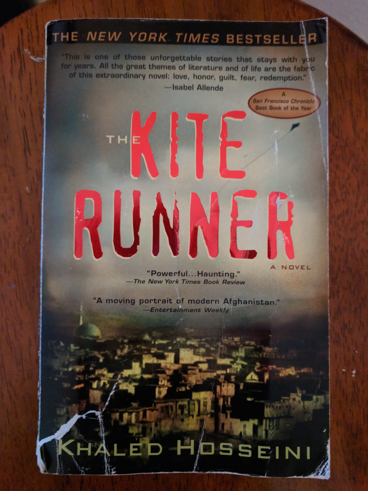
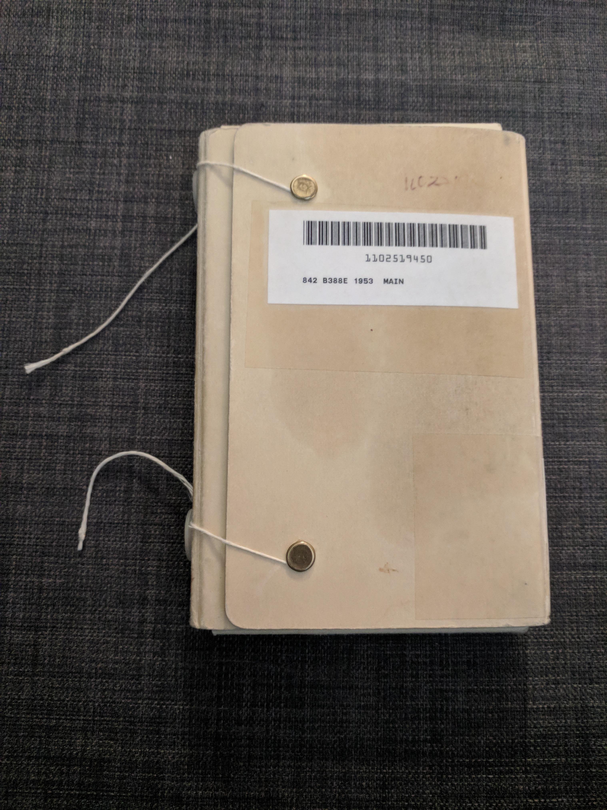
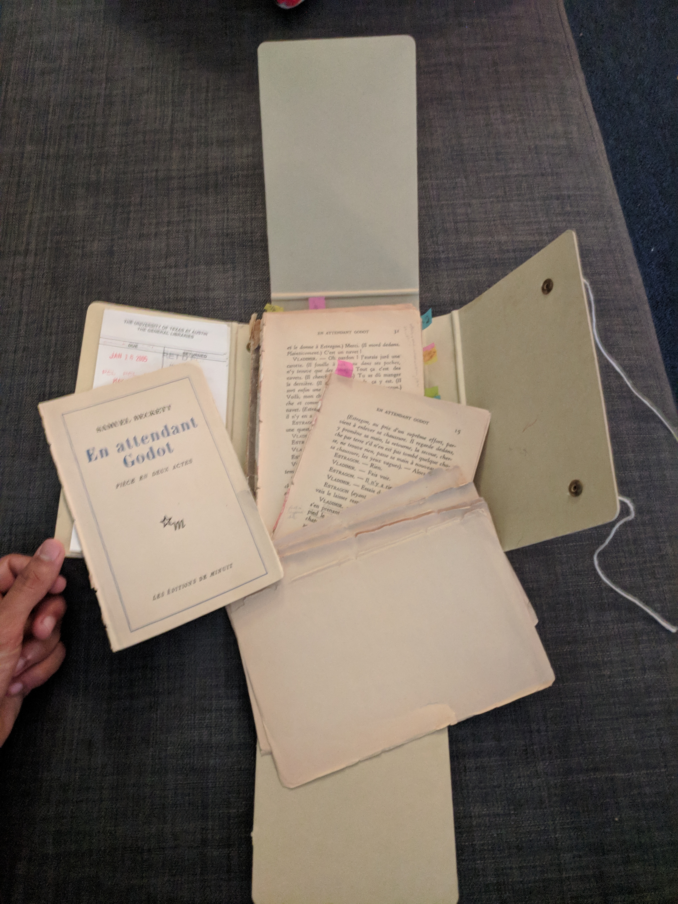
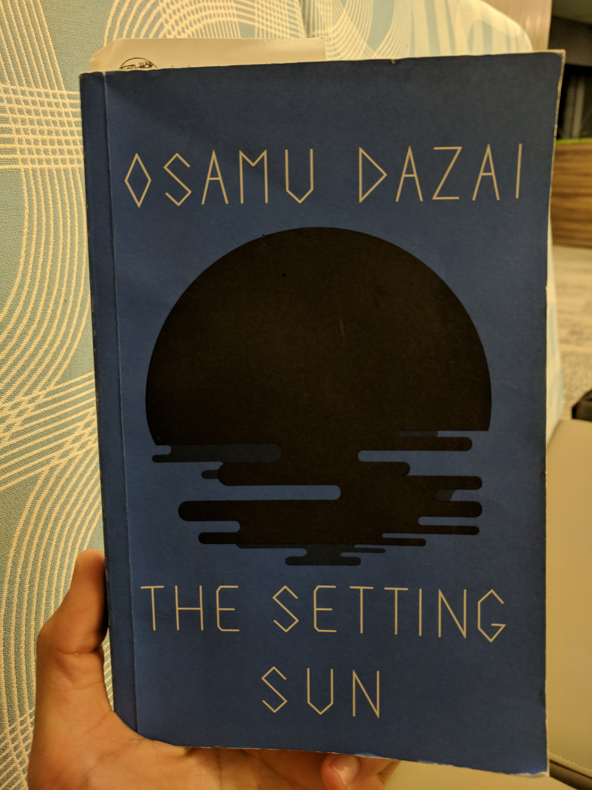

The Importance of Being Earnest by Oscar Wilde (January)
On Civil Disobedience by Henry David Thoreau (January Bonus Round!)
A River Runs Through It & Other Stories by Norman Maclean (January Bonus Rounds!)
The New Jim Crow by Michelle Alexander (February)
Between the World and Me by Ta-Nehisi Coates (March)
The Kite Runner by Khaled Hosseini (March Bonus Round!)
En Attendant Godot by Samuel Beckett (April)
The Martian by Andy Weir (May)
Pride and Prejudice by Jane Austen (June)
Kitchen & Moonlight Shadow by Banana Yoshimoto (June Bonus Rounds!)
After Dark by Haruki Murakami (July)
Shoe Dog by Phil Knight (July Bonus Round!)
The Setting Sun by Osamu Dazai (July Bonus Round!)See also: (At Least) 12 Books in 12 Months - 2017
"If I am occasionally a little over-dressed, I make up for it by being always immensely over-educated"
Algernon (Act II, Page 25)
What a way to start off the year, this play was so good! I was tickled pink by how the dialogue and scenarios were perfectly absurd.
This play was perfect for me because I was looking for something lighthearted, I really enjoyed reading Wilde's A Picture of Dorian Gray back in the day, and I get public domain books like this for free on my Amazon Kindle. Needless to say, I was not disappointed at all. Because I enjoyed both of Oscar Wilde's pieces so much, I read up a bit on him and his literature. This led me to learn about the role of a "dandy" in Wilde's work. From this Guardian article we can learn that "A dandy is, of course, a man overwhelmingly preoccupied with appearance and whose life is presented as a work of art". I love it. The dandy aesthetic is something I can absolutely get on board with.
I had high hopes for this book. I remember how highly my AP US History teacher in high school spoke about transcendentalism and how she lamented that she didn't have more time to go over the work of Henry David Thoreau and his contemporaries. This was another book I found for free on my Amazon Kindle because it is public domain, so I decided to give it a shot.
Unfortunately I was less than impressed. I knew I wasn't going to be on board with everything Thoreau said when the first words in the extended essay were:
I heartily accept the motto, "That government is best which governs least"; and I should like to see it acted up to more rapidly and systematically. Carried out, it finally amounts to this, which also I believe -- "That government is best which governs not at all"; and when men are prepared for it, that will be the kind of government which they will have.
Thoreau goes on to make the following argument: If the government is doing something wrong, you should disagree with the government. If you disagree with the government you should do everything in your power to stop the government from doing wrong (not just vote, but truly everything in your power).
Even after reading this extended essay I still haven't made up my mind about where I stand on civil disobedience as a concept. On one hand, I recognize that de jure solutions to unjust laws are doomed to be inneffectual, I admire John Lewis's practice of #GoodTrouble, and (in extreme cases like the abolition of slavery) I see the value in revoking the consent of the governed. On the other hand I tend to think of the government as more good than it is bad, I do not think that opposing certain facets of the government warrants opposing the government entirely, and I am far more confident in traditional methods of civic engagement (voting, etc.) than Thoreau is.
I think it is important to note the privilege from which I am speaking. Slavery has been abolished, and I cannot think of a similarly divisive issue that threatens to plunge the US into a civil war. Similarly, the military conflicts we are presently engaged in are far further out of sight and mind than the Mexican American War was for Thoreau. I think I'm pretty dovish, but in my short life I've never been directly faced with the realities of international military conflict; I can't definitively say one way or the other how hawkish I really am. Thus, the policy questions I am weighing today feel less all-or-nothing than those of Thoreau's era.
But I also think it is important to note the privilege from which Thoreau is speaking: "For my own part, I should not like to think that I ever rely on the protection of the State". The role and scope of government has changed since this article was written in 1849 -- now there are people who, due to circumstances out of their control, do rely on the protection of the State. They do not have the flexibility to accept the motto "that government is best which governs least". Thoreau did not consider this population in his essay because he was before their time, but that does not mean modern discussion can similarly disregard this group.
In general, I think I agree with most of the specific things Henry David Thoreau said about the problems of his time and his responses. However, I hesitate to generalize them past his specific scenario and I would be skeptical of arguments for modern issues that build on his words.

These stories are about Montana, and fly fishing, and having a preacher for a father, and whores, and the US Forest Service. As a affluent Indian kid attending college in the middle of a big city, I can relate to approximately none of those subjects. Obviously there is value to reading stories outside of your sphere of knowledge and yadda yadda. But I still almost quit after the first short story, not wanting to read the other two.
These books reminded me of my childhood in the Appalachian mountains on the border of Ohio and West Virginia. Here's a weird memory from middle school: every year we would all be required to submit to an essay contest where the only prompt was "I am a child of Appalachia". It was interesting to write because I didn't identify as a child of Appalachia, but I did identify as the kind of child who would win essay contests 1.
We were also required to read a remarkable amount of what I can best classify as "wilderness literature" (The Red Pony, Hatchet, Tom Sawyer, Where the Red Fern Grows, etc.). Again, I never really felt like I could relate, but in retrospect some elements of my childhood were pretty rugged. I dirt-biked on weekends because that was the normal activity to spend a Saturday morning doing. There was a hill next to my house that my friends and I would bike to and then climb -- once we were there we would pick the burrs off our clothes, skip rocks in the pond for hours, and forage through the honeysuckle vines. All the license plates in the area had the phrase "WV: Wild and Wonderful" on them, and I think that's surprisingly accurate.
Because of reading Where the Red Fern Grows I know more about 'coon hunting than you would expect someone in my demographic to know. Similarly, now that I've read this book I guess I know a surprising amount about fly fishing for the fact that I have never (and will never) go fishing. But also just like Where the Red Fern Grows, this book wasn't just about killing animals. It was about a boy growing up in the presence of nature. And I like to think that is something I can identify with.

"The unfortunate reality we must face is that racism manifests itself not only in individual attitudes and stereotypes, but also in the basic structure of society"
(Page 184)
On a surface level, I knew America had obviously not vanquished the racism that has perennialy plagued us. But until I read this book I did not truly appreciate the magnitude to which racism permeates the very fabric of society today. The book outlined the ways in which our current criminal justice system is inexcusably structured to oppress communities of color, and demonstrated the broader impact this has on every aspect of life in America.
I only had a hazy understanding of the following concepts before this book, but now I can clearly articulate what each one is really about:
I tried to tie each of these concepts together into a quick overview for people unfamiliar (or only vaguely familiar) with the topic. I stopped because I kept remembering connected concepts that I would also need to add for context. Pretty quickly I realized that I would need an entire book to survey everything wrong with the current situation, and that whole book was sitting on the table right in front of me. I can't recommend this book highly enough. Read this book. Trust me.
As I read the book I was mainly just angry. Not sad or disappointed, but angry and frustrated. The most frustrating part was that the system is not unfair to me, or even to anyone I know for that matter. If I hadn't read this book, I would be able to live my whole life living in blissful ignorance of how dire the situation is. I feel tricked.
I am a part of a non-partisan civic engagement organization called TX Votes, which basically just registers people to vote and distributes non-partisan voting information in my area. The New Jim Crow has convinced me that TX Votes should concentrate some amount of effort to registering ex-felons to vote. For context, felons lose the right to vote in Texas, and only regain it after they have completed their sentence. There is a process to get re-registered (filling out a form), and I'm guessing no one reminds them to do so, which leads me to believe the voter registration rates for ex-felons is pretty low. This low rate is a tool of voter disenfranchisement, which hopefully I can help combat with this new project idea. Everything is still very much in the planning/research stage, but I've taken a few steps to get the ball rolling and hopefully we can get the plan implemented. It would be really valuable, so I really hope I follow through with this idea.

"[...] exulting non-violence for the weak and the biggest guns for the strong"
(Page 131)
The last book I read was The New Jim Crow, which gave me mountains of cold, hard facts and evidence about the effect of racism in America today on a macroscopic scale. Between the World and Me was a short memoir that helped me form a more complete image by providing insight on a personal scale from someone's lived experience.
I really enjoyed reading the book, and was very impressed with the writing. Coates structured the book as a letter to his son about his life as a black man in America. It was a good supplement to The New Jim Crow so I'm really glad I read them back-to-back.
Once again, I'm having trouble summarizing what I liked about the book without just rewriting the whole book on this page. I really did think it was a good book, though, and it was pretty small so it is definitely worth the read if you're interested in memoir style books or race relations.

"You probably lived in a big two- or three-story house with a nice back yard that your gardener filled with flowers and fruit trees. All gated, of course. Your father drove an American car. You had servants, probably Hazaras. Your parents hired workers to decorate the house for the fancy mehmanis they threw, so their friends would come over to drink and boast about their travels to Europe or America." [...] He pointed to an old man dressed in ragged clothes trudging down a dirt path, a large burlap pack filled with scrub grass tied to his back. "That's the real Afghanistan, Agha sahib. That's the Afghanistan I know. You? You've always been a tourist here, you just didn't know it."
(Chapter 19)
I'm glad I read this book because I think it was an important part of pop-culture that I no longer feel excluded from. FOMO 2 is an interesting motive for reading: is it a good utilization of the cultural phenomenon of FOMO or is it a bastardization of reading as a tool for fulfillment?
I did not enjoy reading this book. Maybe this isn't the type of book you're supposed to enjoy reading. But speaking more broadly, I don't really like fiction books. Terrible things happened to the characters of this book, and in turn they did terrible things. Stories like this are meant to reflect life's unfortunate realitites, and the characters are just a vessel for the story. But I had trouble finding empathy for the scenarios because it was easy for me to dismiss them as contrived.

I went to the library to find this peculiar play, and I had to ask the front desk where to find it because the online catalog listed its location as "Library Reserves". Turns out some class was using it, so I was informed me I would only be able to check it out for a maximum of two hours. I wasn't sure if I was even going to commit to reading it, so I checked it out and found a cozy spot to read. I opened it up and found that the book I had checked out was actually just a collection of newspaper clippings about the play that I had actually intended to read. Because the book was in french, neither I nor the librarian looked too closely at it to realize something was up. I returned it and asked where to find the actual book. After searching up and down in the wrong aisle for way too long, I finally found it. When I picked it up, I thought it was a VHS tape or something at first.

I sat down and opened it up before checking it out this time. I opened it up and found the coolest thing ever. This copy of the book is like from 1953 or something, and literally falling apart. The case it comes in is meant to tie together all the loose pages that constitute the book. Everytime you start reading it is like you have to unrwap a little present.

The pages were so covered in penciled in notes that you would think the previous owner was the Half Blood Prince. But it worked out really well, because whoever did make the markings had about the same level of French vocabulary as I do. They penciled in translations for all the words I didn't know3, which was very convenient for me.
This book was so ridiculous. On one hand I just want to leave it at that. On the other hand I want to suggest an interpretation. Godot is God. Vladimir and Estragon are you and I (not necessarily respectively). They are waiting for God. What are they doing in the meantime. Does it matter? They're not searching very hard or anything. Just kind of doing their own thing until God shows himself to them. What if they give up on waiting for God. Well there won't be much left to do at all. Their purpose is to wait, and if they decide that purpose is no longer enough, they might as well just off themselves.
But the status quo is so much easier. Finding a rope to go with the tree is so much effort. It is so much more convenient to just keep waiting. Right?
With that being said, I have no idea what Pozzo and Lucky represent. Maybe nothing. Maybe they were just the elements of randomness in our day to day lives. The whole point is life is pretty weird. It doesn't really make sense. It doesn't really have to. It's the not knowing that counts.
"We can rescue him with Ares 4. It's very risky. We ran the idea by the Ares 4 crew. Not only are they willing to do it, but now they're really pushing hard for it."
"Naturally," Teddy said. "Astronauts are inherently insane. And really noble. What's the idea?"
For the next three months, I will be interning with Amazon in their Tokyo office. I don't speak any Japanese, I can't eat at most restaurants here because I'm vegetarian, and I don't know a soul in this timezone. I started and finished this book on my flight from USA to Japan. Oddly fitting, hmm.
The book itself is a work of fiction about a NASA astronaut who gets stranded on Mars when his crew accidentally vacates the planet without him. The tale catalogues the steps he takes (by combining his background as a botanist and a mechanical engineer) to try to survive long enough for someone to rescue him.
I've talked before about how I'm not really a science fiction kind of guy. But this book struck a chord with me. It gave me a vessel with which I was able to explore my thoughts/feelings/nerves about my impending summer in Japan. Loneliness. Hunger. Isolation. Exhilaration. Homesickness. The planets aligned and I read this book at exactly when I needed to.

"[...] where other powers of entertainment are wanting, the true philosopher will derive benefit from such as are given."
Volume II, Chapter XIX, Page 228
I hate to embody a trope, but the beginning of this book was so boring. As the storyline was being set up, I felt like I knew exactly how everything would play out and I was dreading the process of trudging through the remaining 250 or so pages. I understood how some of the dialogue was clever, but couldn't see what all the hype was about. Namely, I borrowed this book from the "stubborn and prejudiced", but "independent and confident" Avni Nandu who said it was her favorite book4. Not only that, but on two occassions I complained to two people about how boring the book was, and they both cited it as one of their favorite stories, too.
As soon as I was ready to give up, the book got good. Everything completely turned around when a major plot twist ignited the story-line. From there, the book was a delight to read. I was eating cheesecake at a swanky restaurant in the Roppongi District of Japan on a Friday night and couldn't help but laughing from joy when I finished it.

The book itself is about some English family and their marriage prospects. Like I said, it's entertaining to read once you get into it. You know how its going to end, it's just fun to read about all the drama along the way.
Here are some cool quotes that stuck out to me as I was reading:
"Upon the whole, therefore, she found, what had been sometimes found before, that an event to which she had looked forward with impatient desire, did not in taking place, bring all the satisfaction she had promised herself. It was consequently necessary to name some other period for the commencement of actual felicity; to have some other point on which her wishes and hopes might be fixed, and by again enjoying the pleasure of anticipation, console herself for the present, and prepare for another disappointment."
Volume II, Chapter XIX, Page 229
That's what happened to me when I moved to Tokyo. It was supposed to be everything anyone has ever dreamed of -- the culmination of my life thus far. I don't know how to explain how I felt, but basically after I got here I just felt really lonely, lost, and overwhelmingly sad.
"You must learn some of my philosophy. Think only of the past as its remembrance gives you pleasure."
Volume III, Chapter XVI, Page 348
With that being said, things are better now! When I look through my photos I realize all the cool things I've done here that seemed so normal at the time. I'm twenty years old. And living in Tokyo. Like living, breathing, sleeping, and existing in one of the most unique societies in the world. When I describe my life to myself in my head I can't even believe it. I certainly won't forget the ways in which I was unhappy here. But I think I'll probably just condense all my negative thoughts into one summary of how I felt, acknowledge it, and move on. From there, I'll concentrate so much more on remembering the parts of my experience that give me pleasure (like this book! and cheesecake!).

"'Last year nothing happened //
The year before nothing happened //
And the year before that nothing happened.'
An amusing poem to this effect appeared in a newspaper just after the war ended. Of course all kinds of things actually did take place, but when I try to recall them now, I experience that same feeling that nothing happened."
(Page 37)
The title of this book refers to the decline of the Japanese aristocracy as World War II draws to a close. The book itself follows the life of a formerly-wealthy family: the elegant but dying mother, the aimless son, and the steeled daughter.
Japan during the war seems a world away from the Japan I see today. Because of my history lessons in school, I know what to imagine when I think of how America transformed itself for the war effort. But I can't similarly project the change Japanese society must have undergone to mount their attempted imperialism. I liked reading this book because it doesn't speak of the Japan of old (samurai and the like), nor does it speak of the Japan of today (love-hotels, salarymen, and the like). It speaks to a time that is rarely brought up in pleasant conversation.
It is worth noting that although my primary takeaways from the book were about the war, Dazai treats this theme with a very light hand. I'm not even sure this book was about the war (I think it was primarily about the futility of existence?). But this style seems representative of a traditional Japanese mindset. The theme is only alluded to, but the details that are selected are meant to speak volumes.
I never did win, but I remember one of my three best friends won our school's contest and went on to win the whole regional contest or something.↩
FOMO: fear of missing out↩
Fun fact: "fouet" is the french word for the noun "whip".↩
Judging from the cover, this absolutely didn't strike me as her type of book. In retrospect, she shares numerous traits with the main character, so I admit I judged too soon. But hey, that sounds like a theme to me!↩